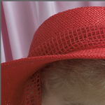
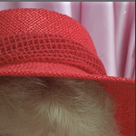

Crop parts of image

A face cropped to fit a certain width and height.
You can control the resulting image dimension using width and height together with the resizing strategies. The strategy crop-to-fit seems to be most useful when creating images of specified dimensions.
Lets review some examples where we use crop-to-fit together with various options to control the size and active part of the image.
#Choose the area of the image to work on
When you crop to fit an image, the base will be the center of the image. You can change this by setting an area as a base for calculating which part to use of the source image. This is actually an easy way of cropping the part of the image that you want to use. You can see this as defining an offset for the active part of the image. You set the area using values for top,right,bottom,left, each value being a percentage of the original image width/height.
Lets take an example where we want to create a thumbnail of the lady, we want to focus on her eyes and mouth.
| What | The image |
|---|---|
Crop to fit without defining the area.?w=150&h=150&crop-to-fit |
|
Ignore the top 25% of the image.?w=150&h=150&crop-to-fit&area=25,0,0,0 |
|
Ignore the right 20% of the image.?w=150&h=150&crop-to-fit&area=0,20,0,0 |
|
Ignore the bottom 20% of the image.?w=150&h=150&crop-to-fit&area=0,0,20,0 |
|
Ignore the left 35% of the image.?w=150&h=150&crop-to-fit&area=0,0,0,35 |
|
Make it altogether to fit only the eyes and the mouth. It may take some tries to get it right.?w=150&h=150&crop-to-fit&area=25,20,20,35 |
#Crop a portion of the image
You can crop parts of an image by setting the width, height, start_x and start_y to define the area to crop from the original image. Doing this, we can achieve the same results as when using area. It is just another mean to the same end, which is – cropping out a certain area of the image. Lets see how this way of cropping works. Lets crop the eyes and the mouth of the lady, once more.
| What | Parameters | The image |
|---|---|---|
| Crop a portion of 300x300 pixels, start at the left, top corner, that is position 0, 0. | ?w=150&crop=300,300,0,0 |
 |
| Crop portion, start at the right, top corner. | ?w=150&crop=300,300,right,top |
 |
| Crop portion, start at the right, bottom corner. | ?w=150&crop=300,300,right,bottom |
|
| Crop portion, start at the left, bottom corner. | ?w=150&crop=300,300,left,bottom |
|
| Crop portion, start at the center, center. | ?w=150&crop=300,300,center,center |
|
| Crop only the eyes and the mouth. | ?w=150&crop=200,220,190,300 |
Cropping is essential when trying to only get the most interesting part of the image.
Learn to crop your images, creative cropping can make wonderful images from appearingly useless originals.